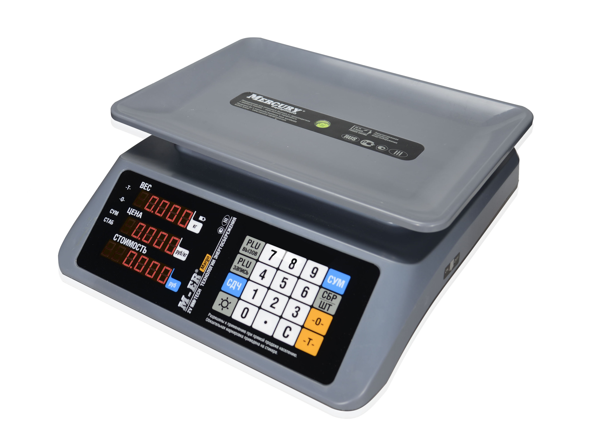

Модели и цены
| Модель | НПВ, кг | Цена деления, гр | Цена, руб. |
|---|---|---|---|
| M-ER 320AC Светодиодная(LED) | от 40 гр до 15 кг | 2/5 |
|
| M-ER 320AC "MARGO" Светодиодная(LED) | от 100 гр до 32 кг. | 5/10 |

(812)322-59-39, 702-72-36

| Модель | НПВ, кг | Цена деления, гр | Цена, руб. |
|---|---|---|---|
| M-ER 320AC Светодиодная(LED) | от 40 гр до 15 кг | 2/5 |
|
| M-ER 320AC "MARGO" Светодиодная(LED) | от 100 гр до 32 кг. | 5/10 |
(812)322-59-39, 702-72-36
| Модель | НПВ, кг | Цена деления, гр | Масса весов, кг |
|---|---|---|---|
| M-ER 320AC "MARGO" Светодиодная(LED) | 6/15 | 2/5 | 1,6 |
| M-ER 320AC "MARGO" Светодиодная(LED) | 15/32 | 5/10 | |
| Рабочий температурный диапазон | от +5 до +35 градусов при допустимой влажности до 80% | ||
| Размер платформы | 330х230 мм | ||
| Класс точности ГОСТ 29329 | средний (III) | ||
| Тип индикации | Светодиодная (LED) | ||
| Время работы от аккумулятора, ч, не менее | не менее 80 часов | ||
| Материал корпуса | пластик | ||
| Материал платформы | нержавеющая сталь | ||
| Габаритные размеры весов, мм | 330x330x115 | ||
| Диапазон выборки массы тары, кг | весь диапазон | ||
| Гарантия | 12 мес | ||
{kind=link}
{kind=link}
{kind=link}
{kind=link}